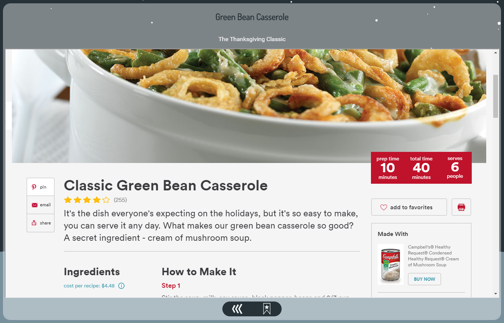

Stars are the primary method of viewing information on Constellation.

Each star may be bookmarked so it can quickly be viewed later on the profile page.

The back button will rapidly send you back to where you came from.

An average star page will look something like this.
